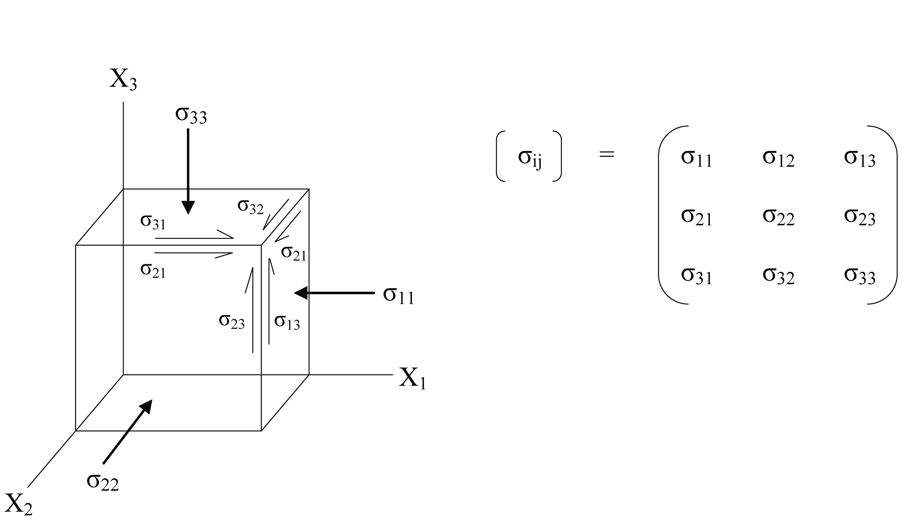
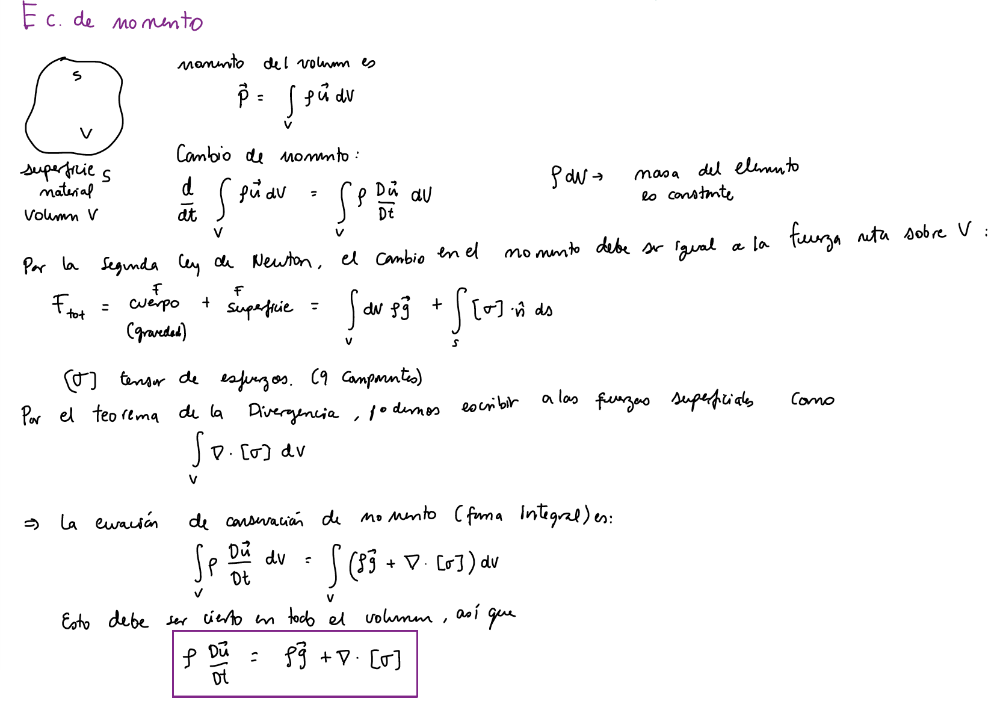
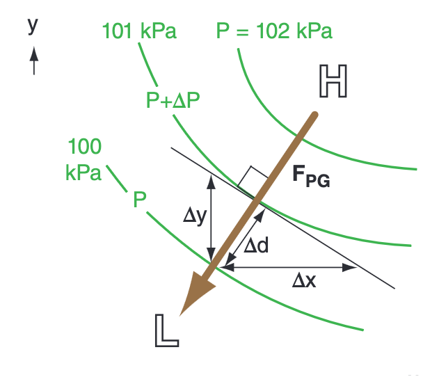
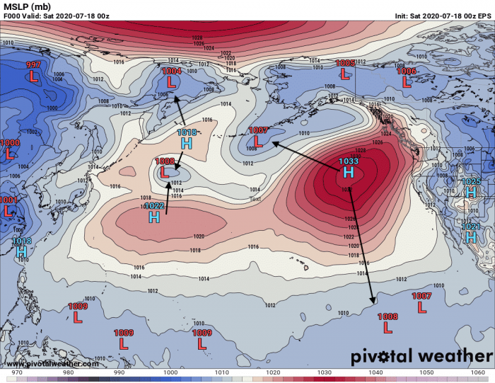
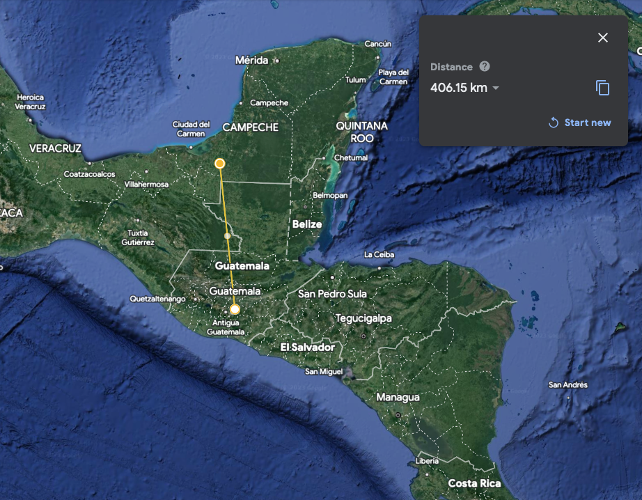

class: center, middle <br/><br/> .title[4 Conservación de momento SIN rotación] <br/><br/> .author[Diplomado en Meteorología y Climatología] .institution[ICAyCC] <br/> .date[24 de febrero de 2023] <br/><br/> <img style="width:100%" src="./figures/green_waves.png"> <!-- .note[Created with [{Liminal}](https://github.com/jonathanlilly/liminal) using [{Remark.js}](http://remarkjs.com/) + [{Markdown}](https://github.com/adam-p/markdown-here/wiki/Markdown-Cheatsheet) + [{KaTeX}](https://katex.org)] --> --- name: toc class: left <img style="width:40%" src="./figures/ink.jpg"> #Contenido 1. [Revisitando descripciones euleriana y largangiana](#euler) 1. [Conservación de momento sin rotación](#momento) 1. [Fuerzas que actúan sobre un fluido](#navier) 1. [Gradiente de presión y esfuerzos turbulentos](#presion) 1. [Aproximación hidrostática](#hidrostatica) 1. [Resumen de ecuaciones](#resumen) <!-- Comment out the next slide if you don't want the Table of Contents link --> --- layout: true .toc[[✧](#toc)] --- name: euler class: left ## Euleriano vs lagrangiano .left-column[* Lagrangiano: el sistema de referencia se mueve con la parcela de fluido (es decir X,Y,Z cambian en el tiempo) </br> * Euleriano: Sistema de referencia fijo (x, y, z no cambian en el tiempo)] .right-column[<img style="width:100%" src="./figures/Stull_euleriano.png"> .caption[Advección en dirección $y$ de viento en $x$; $O$ es una estación meteorológica fija. La caja gris es una masa de aire dentro de la cual hay un gradiente de velocidad del viento en $x$, $U$. Figura 10.4 de [Stull, 2017](https://www.eoas.ubc.ca/books/Practical_Meteorology/prmet102/Ch10-forces_winds-v102b.pdf)]] --- class: left El aire se mueve debido a las fuerzas que actúan sobre él. Las leyes de Newton describen como es que las fuerzas generan vientos (dinámica). ¿Recuerdan las leyes de Newton? 1 , 2, y 3 --- class: center .caption[Imagen de [Daenna Gonzalez](https://issuu.com/daennagonzalez/docs/newton___s_laws_of_motion)] --- Expresión de la segunda ley de newton para un fluido $$F=d\vec{p}/dt\approx m\vec{a},$$ donde $\vec{p}=\vec{v}m$ es el momento, ímpetu o cantidad de movimiento. 6 fuerzas contribuyen a la aceleración neta horizontal del aire: gradiente de presión, adveccion, fuerza centrífuga, Coriolis, peso, disipación y fricción. $$\frac{F\_{neta}}{m} = \frac{F\_{Adv}}{m}$$ $$+\frac{F\_{GP}}{m}+ \frac{F\_{centrifuga}}{m}+ \frac{F\_{Coriolis}}{m}+\frac{F\_{turb}}{m}+\frac{F\_{g}}{m}$$ En esta hora derivaremos las ecuaciones de momento para un fluido que no está en rotación y discutiremos en detalle el gradiente de presión. --- name: momento class: left # Ecuación de conservación de momento Expresión de la segunda ley de newton para un fluido $$F=d\vec{p}/dt\approx m\vec{a}.$$ **Fuerzas en un fluido:** * de cuerpo: Actúan directamente sobre la masa del elemento y se distribuyen sobre todo el volúmen. Ej. gravitacional, electromagnética (si el fluido es conductor). $$\vec{F}_{cuerpo} = m\vec{g} = \int_V dV\rho\vec g$$ --- class: left **Fuerzas en un fluido:** * de superficie: Actúan sobre la superfice, son direccionales. Ej. presión, esfuerzos cortantes.  Tensor de esfuerzos: elementos en la diagonal, **presión**; fuera de la diagonal, **esfuerzos cortantes** $$\vec{F}_{superficie}=\int_S[\sigma]\cdot\hat{n}dS$$. --- class: left ## Derivación consevación de momento  --- class: left ## Ecuación de conservación de momento $$\rho\frac{D\vec{u}}{Dt}=\rho \vec{g} + \nabla\cdot[\sigma]$$ Esta expresión es cierta para cualquier fluido. ¡La física está guardada en el tensor de esfuerzos! **Relaciones constitutivas** Los esfuerzos $[\sigma_{ij}]$ son una combinación de presión $p$ y fricción viscosa: $$\sigma_{ii} = -p + \lambda \nabla \cdot \vec{v} + 2\mu\frac{\partial{u_i}}{\partial{x_i}}$$ $$\sigma_{ij} = \mu\Big(\frac{\partial u_i}{\partial{x_j}}+\frac{\partial u_j}{\partial{x_i}}\Big)$$ --- class: left **Relaciones constitutivas** Los esfuerzos $[\sigma_{ij}]$ son una combinación de presión $p$ y fricción viscosa: $$\sigma_{ii} = -p + \lambda \nabla \cdot \vec{v} + 2\mu\frac{\partial{u_i}}{\partial{x_i}}$$ $$\sigma_{ij} = \mu\Big(\frac{\partial u_i}{\partial{x_j}}+\frac{\partial u_j}{\partial{x_i}}\Big)$$ $\lambda$ y $\mu$ son los coeficientes de viscosidad dinámica y estática, respectivamente. ASUMIENDO que la **relación entre esfuerzo y gradientes de velocidad es lineal** (fluido Newtoniano) e **isotrópica** (las propiedades intrínsecas del fluido no tienen dirección preferencial). --- name: navier class: left # Ecuación de Navier-Stokes Si el flujo es incompresible, $\nabla\cdot\vec{v}=0$. Las ecuaciones constitutivas se simplifican: $$\sigma\_{ij} = -p \delta\_{ij} + \mu\Big(\frac{\partial u\_i}{\partial x\_j}+\frac{\partial u\_j}{\partial x\_i}\Big)$$ ($\delta\_{ij}=1$ si $i=j$, $\delta\_{ij}=0$ si $i\ne j$ ). Ahora podemos sustituir estas expresiones para las fuerzas superficiales en la ecuación de momento para obtener las ecuaciones incompresibles de Navier-Stokes. --- class: left ## Ecuaciones de Navier-Stokes Para los vectores $\vec{u} = (u,v,w)$, $\vec{x}=(x,y,z)$, $\vec{g}=(g_x, g_y, g_z)$, Continuidad: $$0 = \frac{\partial u}{\partial x}+ \frac{\partial v}{\partial y}+ \frac{\partial w}{\partial z}$$ Momento: $$\rho\frac{Du}{Dt}=\rho g_x-\frac{\partial p}{\partial x}+\mu\Big(\frac{\partial^2 u}{\partial x^2}+\frac{\partial^2 u}{\partial y^2}+\frac{\partial^2 u}{\partial z^2}\Big)$$ $$\rho\frac{Dv}{Dt}=\rho g_y-\frac{\partial p}{\partial y}+\mu\Big(\frac{\partial^2 v}{\partial x^2}+\frac{\partial^2 v}{\partial y^2}+\frac{\partial^2 v}{\partial z^2}\Big)$$ $$\rho\frac{Dw}{Dt}=\rho g_z-\frac{\partial p}{\partial z}+\mu\Big(\frac{\partial^2 w}{\partial x^2}+\frac{\partial^2 w}{\partial y^2}+\frac{\partial^2 w}{\partial z^2}\Big)$$ --- name: hidrostatica class: left # Aproximación hidrostática Primero, las componentes horizontales del vector gravedad son despreciables $\vec{g}\approx(0, 0, -g)$, Momento: $$\rho\frac{Du}{Dt}=-\frac{\partial p}{\partial x}+\mu\Big(\frac{\partial^2 u}{\partial x^2}+\frac{\partial^2 u}{\partial y^2}+\frac{\partial^2 u}{\partial z^2}\Big)$$ $$\rho\frac{Dv}{Dt}=-\frac{\partial p}{\partial y}+\mu\Big(\frac{\partial^2 v}{\partial x^2}+\frac{\partial^2 v}{\partial y^2}+\frac{\partial^2 v}{\partial z^2}\Big)$$ $$\boxed{\rho\frac{Dw}{Dt}=-\rho g-\frac{\partial p}{\partial z}+\mu\Big(\frac{\partial^2 w}{\partial x^2}+\frac{\partial^2 w}{\partial y^2}+\frac{\partial^2 w}{\partial z^2}\Big)}$$ --- class: left Cuando las escalas horizontales son mucho mayores que la vertical, la aceleración vertical $Dw/Dt$ es mucho menor que la aceleración gravitacional $g$, además las fuerzas viscosas son relativamente pequeñas: $$\cancel{\rho\frac{Dw}{Dt}}=-\rho g-\frac{\partial p}{\partial z}+\cancel{\mu\Big(\frac{\partial^2 w}{\partial x^2}+\frac{\partial^2 w}{\partial y^2}+\frac{\partial^2 w}{\partial z^2}\Big)}$$ El gradiente de presión compensa el peso (balance hidrostático): $$\rho g \approx \frac{\partial p}{\partial z}.$$ --- class: left Para un flujo de densidad constante y superficie libre: <img style="width:60%" src="./figures/hidrostatica.png"> Integrando la ecuación anterior en la columna de fluido obtenemos que la presión en cualquier punto depende únicamente de la altura de la superficie libre $h(x,y)$: $$p(x,y) = p\_{atm}+ \rho g (z-h(x,y))$$ ¡Esto nos ahorra muchos cálculos en los modelos! --- name: resumen class: left ## Resumen de ecuaciones (incompresibles) Continuidad: $$0 = \frac{\partial u}{\partial x}+ \frac{\partial v}{\partial y}+ \frac{\partial w}{\partial z}$$ Momento: $$\rho\frac{Du}{Dt}=-\frac{\partial p}{\partial x}+\mu\Big(\frac{\partial^2 u}{\partial x^2}+\frac{\partial^2 u}{\partial y^2}+\frac{\partial^2 u}{\partial z^2}\Big)$$ $$\rho\frac{Dv}{Dt}=-\frac{\partial p}{\partial y}+\mu\Big(\frac{\partial^2 v}{\partial x^2}+\frac{\partial^2 v}{\partial y^2}+\frac{\partial^2 v}{\partial z^2}\Big)$$ $$\rho\frac{Dw}{Dt}=-\rho g-\frac{\partial p}{\partial z}+\mu\Big(\frac{\partial^2 w}{\partial x^2}+\frac{\partial^2 w}{\partial y^2}+\frac{\partial^2 w}{\partial z^2}\Big)$$ Aproximación hidrostática: $$\rho g \approx \frac{\partial p}{\partial z}$$. --- class: left ## Gradientes de presión en la atmósfera .left-column[ Horizontales: $$\frac{F\_{GPx}}{m}=-\frac{1}{\rho}\frac{\partial P}{\partial x}\approx \frac{1}{\rho}\frac{\Delta P}{\Delta x}$$ $$\frac{F\_{GPy}}{m}=-\frac{1}{\rho}\frac{\partial P}{\partial y}\approx \frac{1}{\rho}\frac{\Delta P}{\Delta y}$$] .right-column[ .caption[La fuerza debida al gradiente de presión apunta de alta presión a baja presión (al revés que el gradiente mismo). Figura 10.5 de [Stull (2017)](https://www.eoas.ubc.ca/books/Practical_Meteorology/prmet102/Ch10-forces_winds-v102b.pdf).]] --- class: center .caption[Presión atmosférica promedio en superficie para julio 2020, Océano Pacífico.Imagen de pivotal weather, retomada de [severe-weather.eu](https://www.severe-weather.eu/global-weather/pacific-ocean-heatwave-disruption-fa/)] --- class: center Flechas negras: $\vec{F\_{GP}}$ horizontal (ejemplos en algunos puntos)  .caption[Presión atmosférica promedio en superficie para julio 2020, Océano Pacífico.Imagen de pivotal weather, retomada de [severe-weather.eu](https://www.severe-weather.eu/global-weather/pacific-ocean-heatwave-disruption-fa/)] --- class: center .left-column[] .right-column[Candelaria, Campeche está, más o menos, a 400 km al norte de la ciudad de Guatemala. Si la presión en Candelaria es 101 kPa y en Guatemala es 100 kPa, ¿Cuál es la fuerza (por unidad de masa) debida al gradiente de presión y en qué dirección apunta? Toma $\rho=1.1$ kg$~$m$^{-1}$] -- <span style="color:grey;font-weight:400;font-size:25px"> Solución: $$\frac{F\_{PGy}}{m} \approx -\frac{1}{\rho}\frac{\Delta P}{\Delta y}$$ $$ = -\frac{1}{1.1 \textrm{ kg m}^{-1}}\frac{101000-100000 \textrm{ Pa}}{400000-0 \textrm{ m}}$$ $$=–2.27\times10^{–3} \textrm{m s}^{–2}.$$ La fuerza apunta de presión alta a baja, entonces de norte a sur (Corroboramos con el signo). </span> --- class: left # Referencias .caption[ Esta presentación está basada en las notas de clase de Prof. Stephanie Waterman (UBC) y Prof. Suzanne Fielding (Durham).] .caption[y en el capítulo 10 de [Stull (2017)](https://www.eoas.ubc.ca/books/Practical_Meteorology/prmet102/Ch10-forces_winds-v102b.pdf).] </br> </br> .caption[ Bibliografía adicional: P. K. Kundu y I. M.Cohen (2004) Fluid Mechanics, 3ra ed. Elsevier.] </br></br> .caption[Imágenes tomadas de Graham Richardson en flickr] .caption[(tinta azul), latintimes.com (Popocatépetl), learncax.com (elemento de fluido), wikicommons (afloramiento en Isla de Vancouver)] .caption[Lagrangian Drifter Lab SRIPPS (drifter), https://kinoshita.eti.br/2016/07/12/ (globo meteorológico), mayo05 getty images (anemómetro), Figura 1 en Bailey et al. (2019) Coastal Mooring Observing Networks and Their Data Products: Recommendations for the Next Decade (https://doi.org/10.3389/fmars.2019.00180) (esquemas anclajes costeros)]